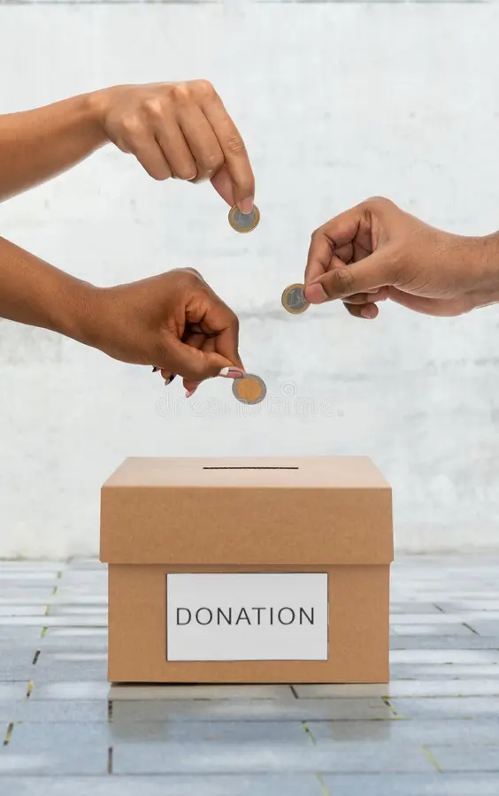

Support Our Paws: Make a Donation
Paws Pet Rescue relies entirely on the generosity of supporters like you. Your donation directly funds medical care, food, shelter, and enrichment for the animals in our care. Every contribution, big or small, makes a life-saving difference.
Ways to Give
Monthly Giving
Become a Paw Partner! Monthly donations provide steady support we can count on all year round.
Become a Paw PartnerDonate Supplies
Check our Wish List for items we urgently need, such as food, litter, toys, and cleaning supplies.
View Wish ListOur Wish List
We are always grateful for donations of new or gently used items. Our current needs include:
- Dry and wet food for cats and dogs (unopened)
- Clumping cat litter
- Durable dog toys (e.g., Kongs)
- Cat toys (e.g., wand toys, crinkle balls)
- Blankets and towels (gently used okay)
- Paper towels and cleaning supplies
- Office supplies (copy paper, pens)
- Gift cards to pet supply stores or local supermarkets
Items can be dropped off during our open hours. Thank you for your kindness!